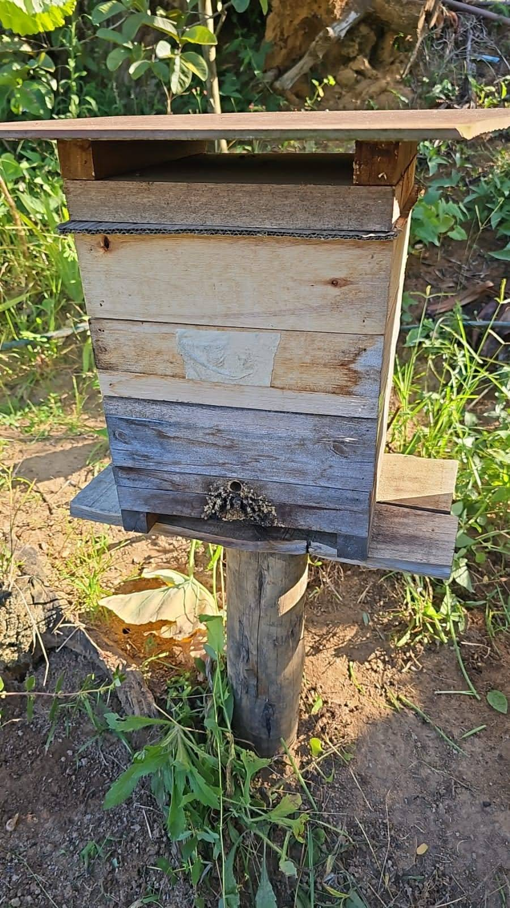
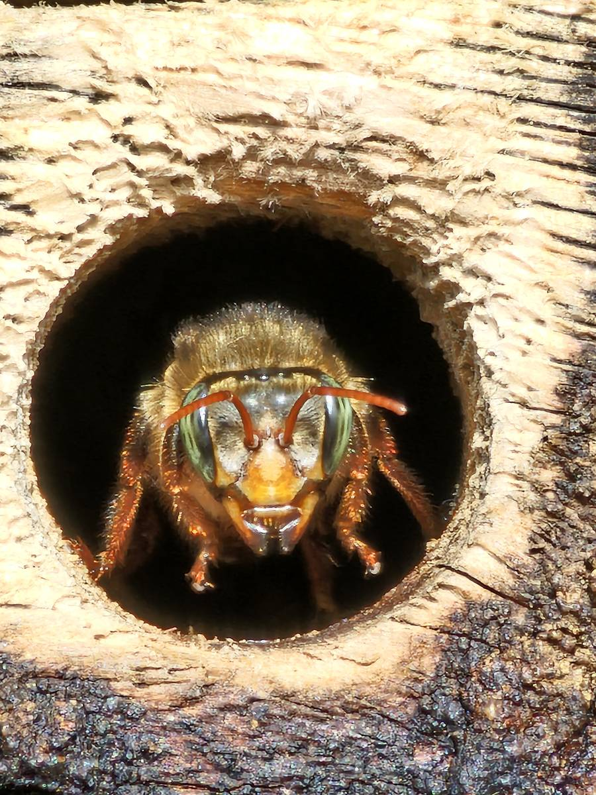
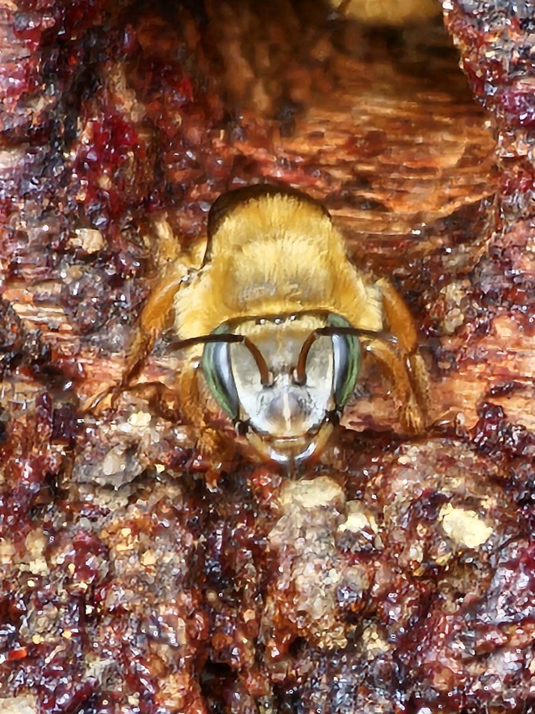
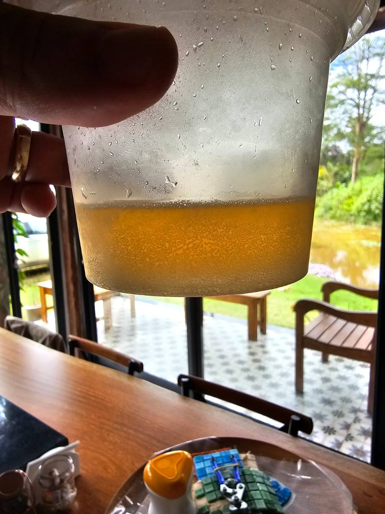

As abelhas sem ferrão de Santa Teresa: mel fermentado, zero trabalho e nenhuma picada
Quem passa uma tarde numa propriedade aqui da região acaba vendo: umas caixinhas de madeira apoiadas num toco ou penduradas na sombra, com um vai e vem discreto de abelhas bem pequenas. São as nossas abelhas nativas, as chamadas sem ferrão. E sim, é isso mesmo — elas não picam.
Uma coisa comum no quintal daqui
No Circuito Caravaggio e na zona rural de Santa Teresa, encontrar um meliponário pequeno é rotina. Duas, três, cinco caixas num canto do terreno. Quase nunca é negócio: é hobby, é herança de família, é vontade de ter a mata trabalhando ali do lado. O produtor tem as dele. O vizinho que vem só no fim de semana também.

Quem são elas
Aqui na Mata Atlântica capixaba temos várias espécies. Três aparecem o tempo todo na conversa de quem cria:
- Jataí (Tetragonisca angustula) — a mais popular e a mais fácil para quem está começando. Bem pequenininha, dócil, se adapta a quase tudo: faz ninho em tronco oco, em buraco de muro, em vão de tijolo.
- Mandaçaia (Melipona quadrifasciata) — maior, com listras amarelas. O nome vem do tupi e significa "vigia bonito", porque há sempre uma abelha parada na entrada do ninho, de guarda. Poliniza café, goiaba, acerola, abóbora, tomate, pimentão.
- Uruçu-amarela (Melipona mondury) — robusta, de pelagem dourada e porte bem maior que o da jataí. É a uruçu da Mata Atlântica e uma das melhores produtoras de mel entre as nativas.
- Uruçu-negra (Melipona capixaba) — essa é motivo de orgulho nosso: só existe no Espírito Santo, nas regiões de montanha de Mata Atlântica. Precisa de altitude e clima ameno para viver. Hoje está ameaçada de extinção, por causa do desmatamento.


A uruçu-amarela das fotos acima é de uma caixa aqui da região. São todas do grupo dos meliponíneos. O Espírito Santo tem 40 espécies catalogadas, em 18 gêneros — quase dois terços de todos os gêneros de abelhas sem ferrão registrados no Brasil passam por aqui.
Por que elas não picam
Tecnicamente elas até têm ferrão, mas ele é atrofiado e não funciona para defesa. Por isso o nome. É a diferença mais importante em relação à abelha africanizada (Apis mellifera) — aquela dos apiários grandes, que exige roupa de proteção, fumaça e distância respeitosa.
As nativas se defendem de outro jeito: no máximo beliscam, grudam no cabelo, zumbem em volta. Nada além disso. São completamente inofensivas, seguras inclusive para criança. E criança ama: abrir a caixa, ver o enxame por dentro, entender como funciona aquele mundo organizado ali, tirar o próprio mel com a colher. Não tem passeio de sítio que compita com isso.
O mel é outra coisa — literalmente
Aqui está a parte que pega todo mundo de surpresa.
A abelha com ferrão desidrata o mel: bate asa dentro da colmeia até evaporar a água e deixar aquele líquido grosso, muito doce, que dura anos na prateleira. A abelha sem ferrão faz o contrário — ela guarda o mel em potinhos de cerume (uma mistura de cera e própolis) e o produto fica com bem mais umidade. Em vez de desidratar, ele fermenta naturalmente.
O resultado é isto:

É dourado, translúcido, corre no copo quase como suco. E o sabor não é o doce pesado que a gente espera de mel: é ácido, leve, frutado, com um fundo fermentado que lembra mais um suco de fruta ou um vinho branco jovem do que mel de supermercado. Quem prova pela primeira vez quase sempre para no meio da colherada, surpreso.
Cada espécie de abelha e cada florada dão um perfil diferente. Nenhum pote é igual ao outro — é o mesmo raciocínio de terroir que se usa para vinho.
O que tem dentro dele
Além do sabor, esse mel tem uma composição bem distinta. É rico em flavonoides e compostos fenólicos, associados a ação antioxidante, anti-inflamatória e antimicrobiana. Estudos comparativos apontam atividade antioxidante mais alta que a do mel de Apis mellifera. Traz também vitaminas do complexo B e C, e minerais como cálcio, potássio, fósforo, magnésio e ferro.
Por aqui ele é usado há gerações na medicina caseira, principalmente para dor de garganta, tosse e cicatrização — inclusive há pesquisa em enfermagem estudando o uso dele em tratamento de feridas. Vale a ressalva de sempre: mel de qualquer tipo não deve ser dado a criança com menos de 1 ano.
O preço
É aqui que a conta muda. Uma colônia de abelha nativa produz muito menos que uma colmeia de Apis — a diferença é de quilos para gramas, dependendo da espécie. Some a isso um manejo mais delicado, um mel mais úmido e perecível, e uma demanda crescente de gente que descobriu o produto.
Resultado: o mel de abelha nativa pode custar várias vezes o preço do mel comum. Em algumas espécies, chega ao quádruplo. Não é marketing — é raridade real.
E não dá trabalho nenhum
Essa é a parte que mais surpreende quem nunca criou. Meliponário não é apiário.
Não tem manejo semanal, não tem roupa especial, não tem fumigador, não tem estrutura. As caixas ficam ali, quietas, e as abelhas resolvem a vida delas sozinhas. O que elas precisam é simples:
- um canto tranquilo, com sombra e proteção de chuva forte;
- a entrada virada para o sol da manhã, se der;
- mata, pomar ou jardim com flores por perto — o que aqui é o cenário padrão;
- não usar veneno na volta.
A colheita do mel acontece uma ou duas vezes por ano, e é mais evento de família do que tarefa. E se você quiser começar: vários moradores aqui do Caravaggio criam há anos e costumam fornecer as primeiras caixas para quem tem interesse. É assim que a maioria dos meliponários daqui nasceu — alguém ganhou ou comprou uma colônia de um vizinho.
Elas seguram a mata em pé
Tem o lado que, para mim, é o mais bonito. As abelhas sem ferrão são as principais polinizadoras das nossas matas. Estima-se que elas respondam por até 90% da polinização das espécies vegetais da Mata Atlântica — o índice mais alto de todos os biomas brasileiros.
Isso quer dizer, na prática, que boa parte das árvores nativas que fazem a paisagem daqui depende delas para se reproduzir. A uruçu-negra, por exemplo, poliniza inclusive orquídeas da nossa região. Sem ela, é provável que várias plantas desaparecessem junto.
Ou seja: as caixinhas no quintal não são só uma fonte de mel bonito. São um pedaço da mata que continua se regenerando.
Meu recado
Se você tem terreno aqui, ou está pensando em comprar um pedaço de mata para fazer a sua casa de fim de semana, vale conhecer esse universo antes de achar que é complicado. Não é. Não precisa virar produtor, não precisa investir, não precisa aprender ofício nenhum.
Precisa de um canto no quintal e de vontade de olhar.
É das coisas mais simples que dá para fazer num terreno na serra — e das que mais devolvem. Um pote de mel por ano que não se compra em qualquer lugar, a mata do entorno polinizada, e as crianças com uma história para contar na volta.
Quer conhecer terrenos em Santa Teresa e no Circuito Caravaggio, com o olhar de quem mora aqui?
Falar com a Milla no WhatsAppEspécies, distribuição e número de gêneros de abelhas sem ferrão no Espírito Santo: revisão publicada na Incaper em Revista (v. 15, 2024) e material educativo do IEMA sobre as abelhas do Parque Estadual Pedra Azul. Uruçu-negra (Melipona capixaba) como espécie endêmica capixaba e ameaçada: IEMA. Ferrão atrofiado e sem função defensiva, e polinização de até 90% das espécies vegetais da Mata Atlântica: Embrapa (Kerr et al.). Diferença entre desidratação e fermentação, maior teor de umidade e perfil sensorial mais ácido e líquido do mel de abelha nativa, além de flavonoides, fenóis e ação antioxidante, anti-inflamatória e antimicrobiana: literatura de meliponicultura e entrevista da nutróloga Vanessa Cambraia (Afya Itajubá). Preço de até quatro vezes o do mel de Apis mellifera: estudo da Embrapa sobre mel de uruçu. Uso do mel de abelha sem ferrão em tratamento de feridas: revisão integrativa apresentada no 24º CBCENF. Este texto é relato de quem mora e circula pela região, não orientação técnica de meliponicultura nem indicação médica; para começar a criar, procure um meliponicultor experiente ou a associação local. A uruçu-amarela (Melipona mondury) como representante do grupo da uruçu-amarela na Mata Atlântica, distinta da M. rufiventris do Cerrado, consta de estudos genéticos da UFV em populações de Minas Gerais. A identificação da abelha das fotos foi feita pelo criador das colônias. Fotos: arquivo pessoal.